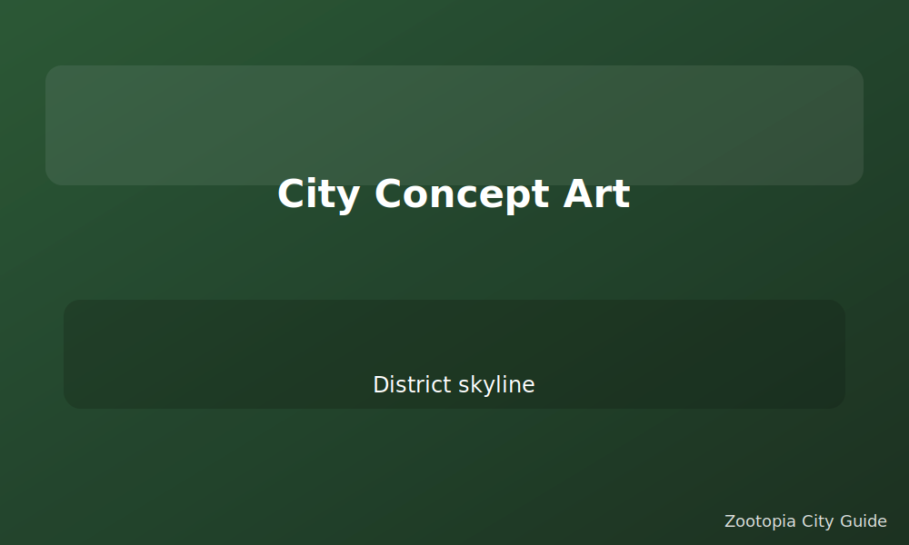

Behind the Animation



-
Story Research
The team visited animal sanctuaries and studied fur physics to make every movement believable.
-
Worldbuilding
District climates share one city core, reflecting how mammals from every biome coexist.
-
Design Details
Billboards, transit maps, and paw-print crosswalks are packed with Easter eggs.
-
Sound & Score
Michael Giacchino's upbeat soundtrack blends city bustle with heartfelt themes.
Peek into the craft behind the movie and share these tidbits while you guide friends through each scene.